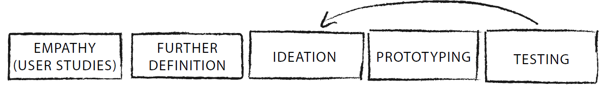
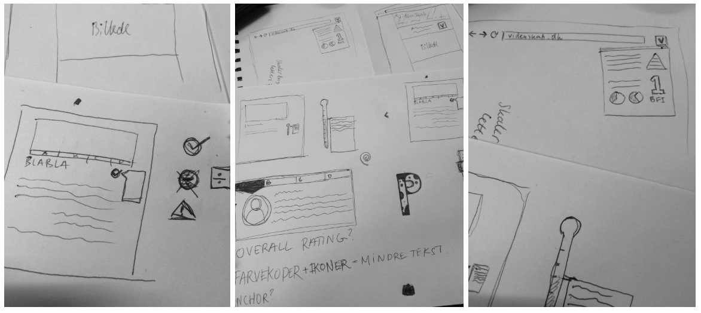

ROLE
UX Designer, UI Designer, User Researcher
TIMEFRAME
February 2018 - June 2018
TOOLS
Sketch, InVision, Lookback, Axure, Adobe XD
TEAM
Master's thesis group of designers
Background for the project
The project was a collaboration between a master's thesis group and Videnskab.dk, a well known pub science (digital) magazine in Denmark. In today’s media saturated society, an immense flow of information is available to everybody with an internet connection. Through smart devices, a ubiquitous internet has allowed media outlets to be present anywhere and anytime. Thus, questions of availability and reach have been replaced by questions of relevance and credibility. In the age of #Fakenews, the question of what is credible - and how to convey that credibility - is an increasingly important subject to investigate, especially in relation to digital news media. Exactly this - online credibility - is what this project sought to decipher.
Problem
The goal of this project was to provide new knowledge on how to convey scientific credibility. The target group of the project was specifically high school students, as they are the primary visitors of Videnskab.dk. The focus of the project was to uncover and solve the challenges that inherently lie in communicating the complex terms and calculations used to determine the credibility of scientific articles to a target group that is not fully scientifically literate yet.
Outcome
Troværdighedssektionen (the credibility barometer) is an addition to articles on Videnskab.dk which communicates the credibility of scientific articles. The concept builds its credibility measurement on the foundation of three individual parameters: The publication, The method and The researcher (explained on Videnskab.dk) By evaluating these, we give the user a broad overview of how trustworthy the results of a scientific article is. Note: The design of the version implemented on Videnskab.dk differs from the one in this article, but the core concept is the same.
The credibility barometer, located at the bottom of scientific articles on Videnskab.dk
Overall process
To allow for innovation in a design project, it is important to distinguish between two aspects of design: problem solving and problem setting. The first is referring to how to build the product, and the latter to whether it is the right product to build. An iterative process such as design thinking allows for both, by cycling through three spaces of inspiration, ideation and implementation. Additionally, It was important for us to be able to fail, move forward and iterate quickly, in which design thinking fits perfectly. The design process spanned across 9 iterations, loosely following the the design thinking process, going through the phases of empathize, define, ideate, prototype and test.
The five phases of the design process
Research
To gain insight into how high school students seek information and perceive credibility online, we conducted seven semi-structured interviews with high school students. The main findings are summed up in the list below:
- The target group all use the internet as the most prevalent resource in regards to school assignments, and the majority know of Videnskab.dk, although only a few of our interviewees uses it.
- The target group has a contrasting understanding of credibility and what constitutes it and can largely be divided into two different segments: Those who value the importance of credibility and credibility assessment, and those who do not have a grasp on what it entails.
- The visual layout and design plays a large role in how credible the resource is perceived. The target group seems to prefer resources that look familiar and seem as if they are used by many others.
- The interviewees who knew of Videnskab.dk perceived it to be a credible source. None of the interviewees expressed any knowledge of the three main credibility parameters.
Based on these findings, we created three personas to use as a basis for the next phase: sketching.
Ideation & Prototyping
We proceeded by utilizing a variant of brainstorming that entailed a relatively simple approach, where each of us had to visualize concept ideas using pen and paper. There were no strict limitations regarding how the idea had to solve the problem, but each idea should somehow communicate the results of the four credibility parameters: hierarchy of evidence, BFI, h-index and “OBS!”. Sketches were later turned into interactive prototypes (Sketch, InVision) to be used during live testing.
Initial sketches of the solution
Testing
Throughout the course of the nine iterations, the concept and design of Troværdighedssektionen was tested in different ways with different purposes. Every iteration was concluded by a test, either with potential users, employees of Videnskab.dk or or an expert review. The tests were of very different structure; some systematized and based on specific methods, others pragmatic and discussion based. We have tested four prototypes on end users, three prototypes in an expert review with a design professor, and one prototype at a workshop day at Videnskab.dk’s office, with their employees.
We utilized three main types of usability testing: The first type, spanning the first couple of iterations: exploratory, the type of test that aims to investigate preliminary concepts and evaluate their promise. After establishing a promising concept: comparisons, aiming to assess one design against another. And lastly, validation, seeking to certify that the features of the product meet certain standards and benchmarks. These standards could be, e.g correctly assessing the credibility, or being able to articulate what “h-index” means.
All the user tests were think-aloud test and similarly structured. A test session entailed a presentation of a scenario and user tasks, think-aloud prototype interaction, and a follow-up semi-structured interview. This method resembles a classic usability test where interaction with a prototype has a defined purpose and a clear focus on specific features. Each test was facilitated by one researcher note taker. Furthermore, we utilized Lookback with screen capture, webcam feed and audio recording in order to document not just what the users said, but also how they reacted.
After each test, the data was reviewed and sorted. This entailed watching recordings in order to extract important and interesting points. In some cases a meaning condensation was necessary - a means of deducing the core of the test subjects statements. In cases like these, the webcam feed provided helpful information about facial expression and position of gaze. After each user test, this procedure of mixed methods resulted in a synthesis of findings, recommendations and opportunities. Lastly, these findings were discussed internally and sorted with the goal of creating design drivers, actionable guidelines and criteria for the next iteration. Then back to the drawing board and ideation and prototyping phase.
User testing the prototype with Lookback
Solution
Troværdighedssektionen is an addition to health articles on Videnskab.dk, which communicates the credibility of scientific articles, and is placed at the bottom of each article. The concept builds its credibility measurement on the foundation of three individual bibliometrics (BFI, hierarchies of evidence and h-index) and a journalistic tool ("OBS!"). By utilizing these different measurements we give the user a broad overview of how trustworthy the results of a scientific health article is. The credibility section is comprised of four tabs (five when "OBS!" is relevant). The first tab, seen below, is a short summarization of the other tabs, supplemented by a visual representation of the individual assessments. The summarization-tab gives the most barebone overview of how credible the scientific research is, which is the core functionality of the concept. Some users are only interested in getting a result in terms of whether or not she can trust the article, therefore the summarization is at the forefront of the design. Additionally, Troværdighedssektionen also appeals to people who are more interested in the underlying factors which constitute credibility. By utilizing multiple tabs and hover effects in the design, we give these people access to more in-depth information - ultimately hiding the complexity from users who do not want it.
Example with good credibility

Example with bad credibility
The content of the 'OBS!'-tab
Reflection
Simplicty & Complexity
An important aspect of this thesis has been the tension between complexity and simplicity. Too much complexity in a concept such as Troværdighedssektionen creates confusion for the target group. This makes the educational aspect a challenging task of balancing what information is vital for successfully conveying the credibility and what is needed to teach about the underlying factors of scientific credibility. We have attempted to solve this, by hiding a layer of complexity in hover effects, thus minimizing unnecessary confusion while enabling educational aspects for the curious reader. On the contrary, making Troværdighedssektionen too simplistic poses the risk of losing nuance and precision. This was made apparent in the earlier iterations of the project, where the barometer did not show the grading-scale within the three parameters, and did not contain hover effects to explain the grading more in depth, but merely showed a traditional barometer, showing a single score. During user testing, interviewees from the target group deemed this blackboxed, hard to understand and untrustworthy, due to the lack of information.
The simplistic barometer
Perceived credibility or actual credibility?
While perceived credibility, such as best practices for design, colors, shapes, typefaces, layout and other visual factors, is not inherently at the forefront of communicating scientific credibility to the target group, it became apparent that it inevitably influences how users interact with Troværdighedssektionen. If the concept, and the visual representation of the concept itself is not perceived as credible, the presented information risks becoming obsolete as users might deem the entire concept unreliable. At first glance, Troværdighedssektionen can appear complex, as the concept attempts to convey credibility through bibliometrics that are unfamiliar to most within the target group. As our user tests elucidated, no members of the target group had previous experience with this type of conveyance of credibility. Thus, the design’s system image did not immediately match the users’ mental models. This relates to the fact that some users utilized traditional perceived credibility assessment cues (mentioned above) to evaluate the credibility of the article, even after being presented with a concept that is designed to assist them with accurately assessing scientific credibility, and is more factually correct than judging the credibility merely through visual cues.